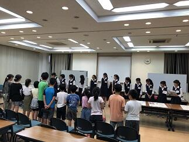
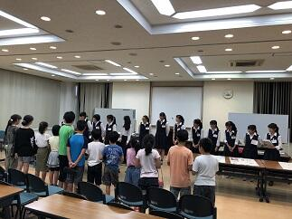
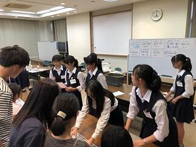
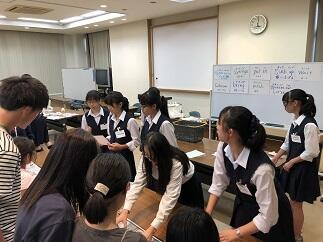

文字
背景
行間


2018年9月の記事一覧
第71回秋季千葉県高等学校野球大会応援よろしくお願いします。


 今日は、平成３０年度第71回秋季千葉県高等学校野球大会の第2回戦が各地で行われました。本校の第１回戦は９月２２日にナスパ･スタジアムで行われた松戸国際戦でした。延長14回の激戦を７－６で制して本日、本校の第2回戦は強豪千葉経済大学付属高等学校（以下 千葉経済）との試合となりました。本日も多くの保護者・ご家族の皆様とOBの方々が応援するなか、佐倉高校の先攻で始まった試合ですが、1回裏に千葉経済に1点先攻されましたが、2回表にすぐ2点取って1点差で5回表までリードをしていました。しかし、5回裏に千葉経済に2点取られて逆に1点リードのまま６回が終わりました。７回の表に、この試合を決定する運命の２点を取り返して１点リードし、６回からリリーフで出場した吉岡選手が、６回から９回まで０点で抑えて４－３で千葉経済に勝利しました。これでベスト１６入りです。今日先発の東海林選手、リリーフの吉岡選手を堅守でバックアップした守備力と大切な場面でつないで得点する攻撃力がかみ合った良い試合だったと思います。応援に来ていただいた保護者・ご家族やOBの皆様、本当にありがとうございました。次のベスト８決めとなる第３回戦は、２９日（土）に柏の葉公園野球場の第１試合で行われる習志野戦です。是非とも皆さんで応援に来ていただけると幸いです。
今日は、平成３０年度第71回秋季千葉県高等学校野球大会の第2回戦が各地で行われました。本校の第１回戦は９月２２日にナスパ･スタジアムで行われた松戸国際戦でした。延長14回の激戦を７－６で制して本日、本校の第2回戦は強豪千葉経済大学付属高等学校（以下 千葉経済）との試合となりました。本日も多くの保護者・ご家族の皆様とOBの方々が応援するなか、佐倉高校の先攻で始まった試合ですが、1回裏に千葉経済に1点先攻されましたが、2回表にすぐ2点取って1点差で5回表までリードをしていました。しかし、5回裏に千葉経済に2点取られて逆に1点リードのまま６回が終わりました。７回の表に、この試合を決定する運命の２点を取り返して１点リードし、６回からリリーフで出場した吉岡選手が、６回から９回まで０点で抑えて４－３で千葉経済に勝利しました。これでベスト１６入りです。今日先発の東海林選手、リリーフの吉岡選手を堅守でバックアップした守備力と大切な場面でつないで得点する攻撃力がかみ合った良い試合だったと思います。応援に来ていただいた保護者・ご家族やOBの皆様、本当にありがとうございました。次のベスト８決めとなる第３回戦は、２９日（土）に柏の葉公園野球場の第１試合で行われる習志野戦です。是非とも皆さんで応援に来ていただけると幸いです。 夢を育む講演会と通学合宿２
 
 今日の6、7限目を使って１学年の生徒を対象に「夢を育む講演会」が開催されました。(写真 左上) 講師は、千葉工業大学の未来ロボット技術研究センター（以下 fuRo）の室長の先川原正浩氏をお願いしました。先川原様からは、fuRo の今までの取り組みと今後を中心にロボット工学の未来についてたくさんの動画を交えてお話を伺うことができました。実際5，6年前であれば現実味が薄かったことが次々と実現されてきています。とはいえ、その時点時点で未来について、いろいろな予測がありましたが、振り返ると実現されているもの、されなかったものがあり、そこには、いろいろな要因があるわけです。言えることは科学技術の進歩だけでなく政治、経済や宗教、倫理観、道徳観などの思想や感情など含めて世界の状況を正しく見ながら未来を自分自身でしっかりと考えて判断していくことの大切さを改めて学びました。
今日の6、7限目を使って１学年の生徒を対象に「夢を育む講演会」が開催されました。(写真 左上) 講師は、千葉工業大学の未来ロボット技術研究センター（以下 fuRo）の室長の先川原正浩氏をお願いしました。先川原様からは、fuRo の今までの取り組みと今後を中心にロボット工学の未来についてたくさんの動画を交えてお話を伺うことができました。実際5，6年前であれば現実味が薄かったことが次々と実現されてきています。とはいえ、その時点時点で未来について、いろいろな予測がありましたが、振り返ると実現されているもの、されなかったものがあり、そこには、いろいろな要因があるわけです。言えることは科学技術の進歩だけでなく政治、経済や宗教、倫理観、道徳観などの思想や感情など含めて世界の状況を正しく見ながら未来を自分自身でしっかりと考えて判断していくことの大切さを改めて学びました。話は代わって今日は、本校ESS部の生徒たちが、通学合宿で来ている小学生に対して、英語で説明して化学実験を体験をしてもらうというイベントを開催しました。（写真 右上、下段）内容は「人工イクラを作る実験」「墨流し」でした。参加した小学生はとても楽しく参加していました。本校ESS部の生徒たちにとっても小学生に教えるという大変貴重な体験をさせていただいてとても良かったと思います。明日も行う予定です。
通学合宿
 本校のセミナーハウス「学思館」を宿泊場所として、小学校の4年生から6年生の子どもたちによる「通学合宿」が本日から3泊4日で実施されます。佐倉市立中央公民館が、今年度は佐倉小学校の対象となる学年の希望児童を集めて実施するもので、子どもたちは親元を離れ、団体生活の中で日常生活の基本を自分自身で行いながら学校に通うというものです。この通学合宿の開講式が本日行われました。合宿に参加した児童の皆さん、合宿期間中に、皆さんのために、本校のESSの生徒がイベントを企画していますので楽しみしていてください。
本校のセミナーハウス「学思館」を宿泊場所として、小学校の4年生から6年生の子どもたちによる「通学合宿」が本日から3泊4日で実施されます。佐倉市立中央公民館が、今年度は佐倉小学校の対象となる学年の希望児童を集めて実施するもので、子どもたちは親元を離れ、団体生活の中で日常生活の基本を自分自身で行いながら学校に通うというものです。この通学合宿の開講式が本日行われました。合宿に参加した児童の皆さん、合宿期間中に、皆さんのために、本校のESSの生徒がイベントを企画していますので楽しみしていてください。なお、この「通学合宿」は千葉県教育委員会で推進していて千葉県各地で行われいるます。子どもたちの社会性、自主性、協調性を伸ばし、「生きる力」を育むことが期待される取り組みです。
平成３０年度関東高等学校カヌー選手権選抜大会（その3）


 今日は決勝です。朝6;00の段階では雨は止んでいます。このまま天候が持ってくれてれば良いコンディションで競技が行えると思います。生徒たちは、予定していた朝のトレーニングメニュウを元気に行っていました。（朝６：００段階）
今日は決勝です。朝6;00の段階では雨は止んでいます。このまま天候が持ってくれてれば良いコンディションで競技が行えると思います。生徒たちは、予定していた朝のトレーニングメニュウを元気に行っていました。（朝６：００段階）お陰様で午前中、雨だけでなく風も無くて、とても良いコンディションのもとで競技を行うことができました。
決勝に進出した佐倉高校のすべての選手が入賞するとともに、高校別の総合成績でも男女とも総合２位となり、閉会式で表彰されました。これも菅澤先生、西山先生、宮代先生、加藤先生や引退した３年生と今まで頑張ってきた成果が結果として表れたのだと思います。本当におめでとうございます。各都県の素晴らしい選手たちとの競技を終えて解決すべき課題や目標ができて、またひと回り大きくなったのではないかと思います。菅澤先生、西山先生、選手の皆さん本当にお疲れ様でした。また、応援に来ていただいた保護者や家族の皆さんありがとうございました。
平成３０年度関東高等学校カヌー選手権選抜大会（その2）


 今日は、大会初日です。精進湖では朝６：００の段階では天候は雨でした。午前中は、強い雨は降りませんでしたがかなり濡れる雨でした。午後からは雨が止む時もあり風が強くなかったことが幸いでした。また、何とか生徒たちの頑張りもあって本日の全日程を無事に終えることができました。これも山梨県カヌー協会の先生方や関東高体連カヌー専門部の各都県の先生方のおかげであるとこころより感謝いたします。また、応援に来てくださった保護者の皆様ありがとうございました。明日はすべての種目の決勝が行われます。佐倉高校も男子カヤックシングル以外のすべての種目で決勝に進出しました。本当に頑張ったと思います。
今日は、大会初日です。精進湖では朝６：００の段階では天候は雨でした。午前中は、強い雨は降りませんでしたがかなり濡れる雨でした。午後からは雨が止む時もあり風が強くなかったことが幸いでした。また、何とか生徒たちの頑張りもあって本日の全日程を無事に終えることができました。これも山梨県カヌー協会の先生方や関東高体連カヌー専門部の各都県の先生方のおかげであるとこころより感謝いたします。また、応援に来てくださった保護者の皆様ありがとうございました。明日はすべての種目の決勝が行われます。佐倉高校も男子カヤックシングル以外のすべての種目で決勝に進出しました。本当に頑張ったと思います。明日も、引き続き今まで頑張ってきた自分と仲間を信じて力を発揮してもらいたいと思います。
平成３０年度関東高等学校カヌー選手権選抜大会（その１）


 平成３０年度関東高等学校カヌー選手権選抜大会が山梨県南都留郡富士河口湖町精進湖カヌー競技場で明日15日、明後日16日と開催されます。本日は、その大会の準備と合わせて関東高体連カヌー専門部秋季委員長会議や監督会議が行われました。また、天候については、あいにくと雨模様に加えて気温が上がらず風が吹くと防寒着がないとつらい一日でした。そんな中、生徒たちは運んできたカヌーの積み下ろし、艇の点検、活動拠点となるテントの設営などきびきびと支度を整え、明日からの競技に備えて念入りにフォームの点検や湖水の状況など確認しつつ練習を行っていました。大変充実した練習が行えたのではないかと思います。晴れていれば雄大な富士山に見守られながらの練習となったのですが、残念ながらお姿を拝むことはできませんでした。（上段右の写真参照）
平成３０年度関東高等学校カヌー選手権選抜大会が山梨県南都留郡富士河口湖町精進湖カヌー競技場で明日15日、明後日16日と開催されます。本日は、その大会の準備と合わせて関東高体連カヌー専門部秋季委員長会議や監督会議が行われました。また、天候については、あいにくと雨模様に加えて気温が上がらず風が吹くと防寒着がないとつらい一日でした。そんな中、生徒たちは運んできたカヌーの積み下ろし、艇の点検、活動拠点となるテントの設営などきびきびと支度を整え、明日からの競技に備えて念入りにフォームの点検や湖水の状況など確認しつつ練習を行っていました。大変充実した練習が行えたのではないかと思います。晴れていれば雄大な富士山に見守られながらの練習となったのですが、残念ながらお姿を拝むことはできませんでした。（上段右の写真参照）明日からの競技会が無事に行われ、参加する選手の皆さんが日ごろの練習の成果を存分に発揮できるよう祈念するとともに、選手の皆さんには競技を楽しんでもらいたいと思います。
皆で出来ることを探して行おう。

 ここ数日の朝の通勤時間帯の気温が19℃近辺で、それ以前と比べると一気に10℃くらい下がり肌寒さを感じてます。温度変化が激しいだけでも体調を整えるのは苦労します。ましてや、災害に遭われた地方の方々は更に大変な思いをされているのではないかと危惧されます。北海道胆振東部地震が発生して一週間が経ちました。全国的に地震については、いつ起きてもおかしくないと言われ続けているなかで、多くの場合、いざという時の備えをしているおかげで被害が軽減できている訳ですが、それでも災害がある度に犠牲を伴うような新たな課題が出てきます。ですから、災害後の支援をどうするかがとても重要です。本日、JRC同好会の生徒たちが発案し、北海道胆振東部地震による被災地支援を目的とした義援金の募金活動を明日14日から20日までの平日の昼休みと帰りのHR終了後を使って実施することになりました。今自分が、社会に対して貢献できることを考え実行に移してくれたのだと思います。その実行力に敬意を表します。趣旨にご賛同いただければ支援へのご協力をお願いします。集めた義援金は日本赤十字社を通して全額を被災地に寄付する予定です。(写真は一部色づき始めた木々の様子です。)
ここ数日の朝の通勤時間帯の気温が19℃近辺で、それ以前と比べると一気に10℃くらい下がり肌寒さを感じてます。温度変化が激しいだけでも体調を整えるのは苦労します。ましてや、災害に遭われた地方の方々は更に大変な思いをされているのではないかと危惧されます。北海道胆振東部地震が発生して一週間が経ちました。全国的に地震については、いつ起きてもおかしくないと言われ続けているなかで、多くの場合、いざという時の備えをしているおかげで被害が軽減できている訳ですが、それでも災害がある度に犠牲を伴うような新たな課題が出てきます。ですから、災害後の支援をどうするかがとても重要です。本日、JRC同好会の生徒たちが発案し、北海道胆振東部地震による被災地支援を目的とした義援金の募金活動を明日14日から20日までの平日の昼休みと帰りのHR終了後を使って実施することになりました。今自分が、社会に対して貢献できることを考え実行に移してくれたのだと思います。その実行力に敬意を表します。趣旨にご賛同いただければ支援へのご協力をお願いします。集めた義援金は日本赤十字社を通して全額を被災地に寄付する予定です。(写真は一部色づき始めた木々の様子です。)